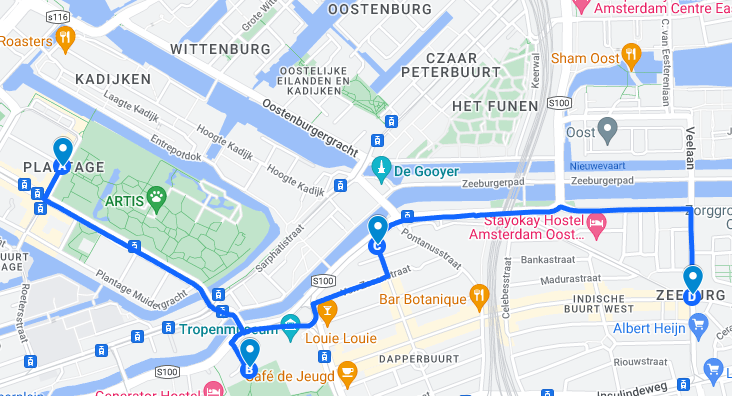
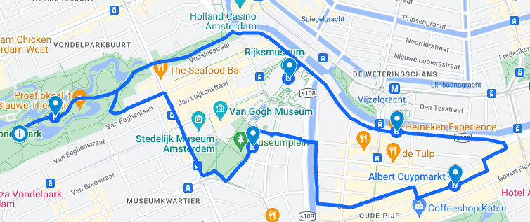
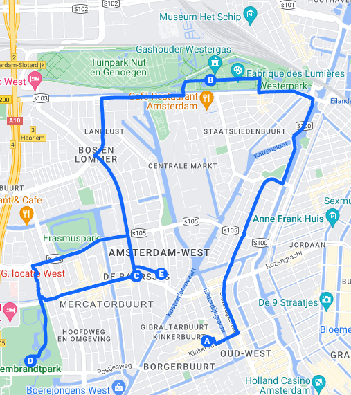

In what neigbourhood would you like to bike?
Close to me
Many stops
Few stops

Oost
- Artis, Zoological garden in Amsterdam's heart.
- Oosterpark, Amsterdam's peaceful urban oasis park.
- Beste Doner, Dappermarkt, Best sandwitches in town
- Indische buurt, Indische Buurt: Amsterdam's cultural melting pot.

Zuid
- Vondelpark: Large, picturesque urban park.
- Rijksmuseum, Dutch national art and history museum.
- Heineken Experience, interactive brewery tour.
- Albertcuyp Markt, busy outdoor market.
- Museumplein, cultural square with museums.
- Vondelpark Openlucht Theater: Open-air theater in Vondelpark.

West
- Foodhallen, food market and event space
- Westergas, urban cultural park and events.
- De baarsjes, Trendy neighborhood with bars and shops
- Rembrandt park, large park with lake, playgrounds
- Restaurant Faam, modern European cuisine in west Amsterdam